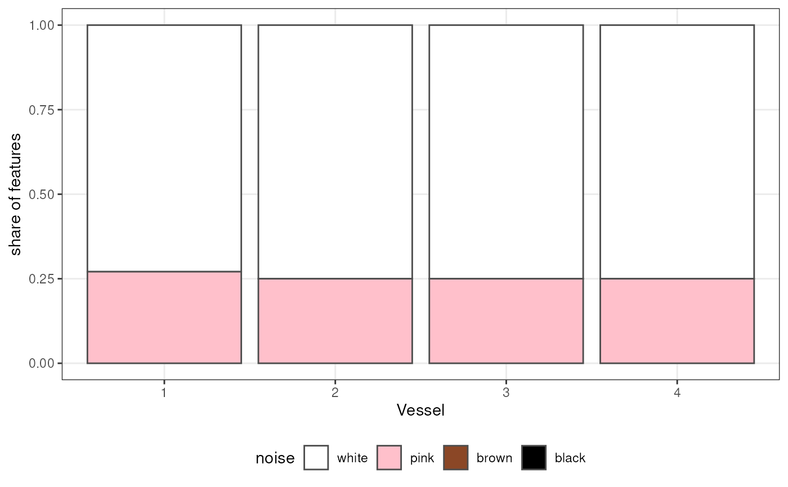

R/AllGenerics.R, R/plotNoise.R, R/zzz-mae.R
plotNoise.RdplotNoise() classifies the series of each feature in each subject
by the slope of its power spectrum as white, pink, brown or black noise,
and draws the share of features of each colour as a stacked bar per
subject.
plotNoise(x, ...)
# S4 method for class 'SummarizedExperiment'
plotNoise(x, time.col, group = NULL, assay.type = "counts", ...)
# S4 method for class 'MultiAssayExperiment'
plotNoise(x, ..., experiment = 1L)a SummarizedExperiment
object.
additional arguments passed to
geom_bar.
Character scalar. Specifies the column from
colData(x) that contains sampling times: numeric, Date
or POSIXct.
Character scalar. Specifies the column from
colData(x) that identifies subjects. If NULL, all samples
form one series. (Default: NULL)
Character scalar. Specifies the assay of the
features. (Default: "counts")
Character scalar or integer scalar. For a
MultiAssayExperiment, the experiment to plot; its samples get
the colData of x. (Default: 1L)
A ggplot object.
Each series is the Lomb-Scargle periodogram of plotSpectrum
(linear trend removed), with a straight line fitted on log-log axes. As
in Faust et al. (2018, doi:10.1186/s40168-018-0496-2), a slope below
-2.25 is black noise, from -2.25 to -1.75 brown, from -1.75 to -0.5
pink, and above white. White noise means no dependence on earlier
samples; the steeper the slope, the longer the memory. Faust et al.
take the steepest slope of a smoothing spline, which is this straight
line for series of up to 100 samples. Faust et al. used relative
abundances of evenly sampled series; uneven sampling flattens the
slope towards white noise.
A feature with fewer than four non-missing samples in a subject, or with the same value in all of them, has no colour there and is left out. The plot data hold the slope and colour of each feature.
plotSpectrum with fit = "power" for the spectrum
and slope of one feature.
# Hourly samples with reads of four vessels of an artificial gut, hours
# 476 to 592, one sample per hour, and the 50 most abundant taxa
data("SilvermanAGutData", package = "miaTime")
tse <- SilvermanAGutData
tse <- tse[, tse$SampleType == "Hourly" &
tse$Normal_Noise_Sample == "Normal" & tse$Time.hr %in% 476:592 &
colSums(SummarizedExperiment::assay(tse)) > 0]
tse <- tse[, !duplicated(paste(tse$Vessel, tse$Time.hr))]
tse <- mia::transformAssay(tse, method = "relabundance")
tse <- tse[mia::getTop(tse, top = 50), ]
plotNoise(tse, time.col = "Time.hr", group = "Vessel",
assay.type = "relabundance")
